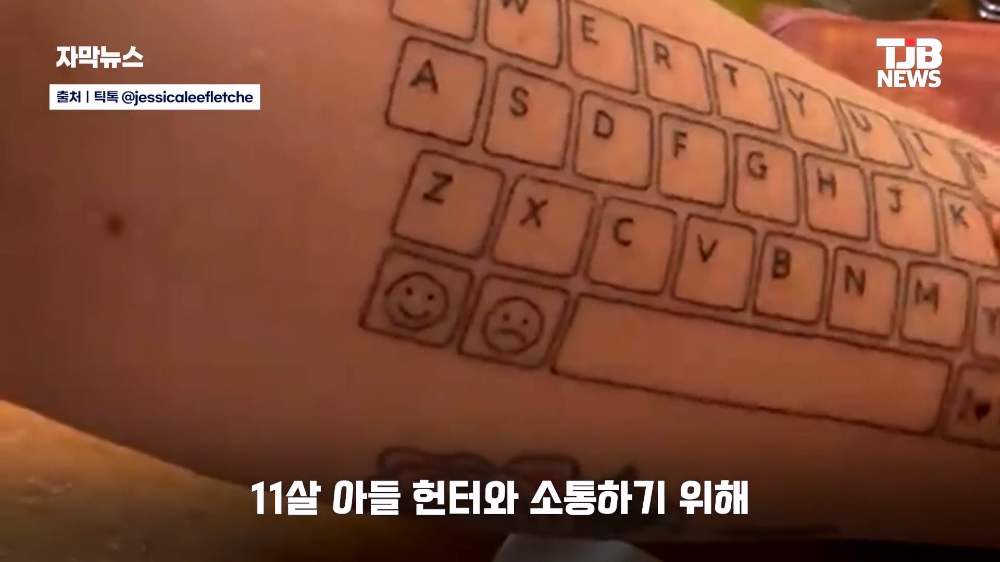
11살 아들과 소통하기 위해
팔뚝에 키보드 문신 새김
자폐성 장애가 있어
말로 의사소통을 표현하지 못한다고 함
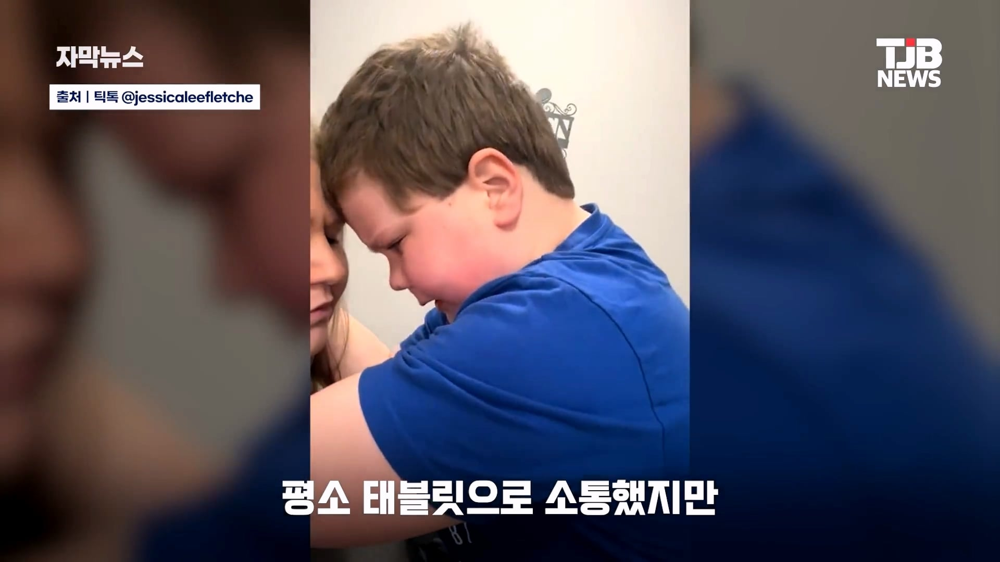
평소 태블릿으로 소통했지만
배터리가 없거나
전자기기를 사용할 수 없는 상황에서
어려움이 있었음
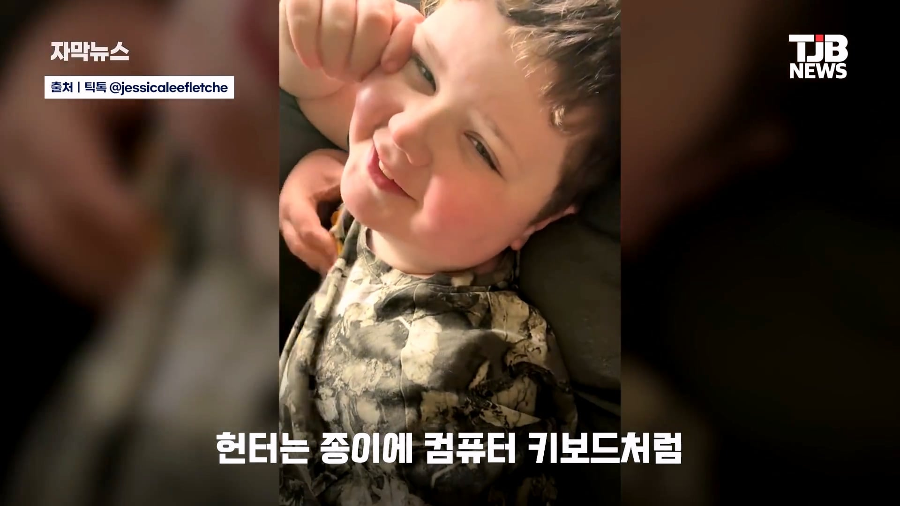
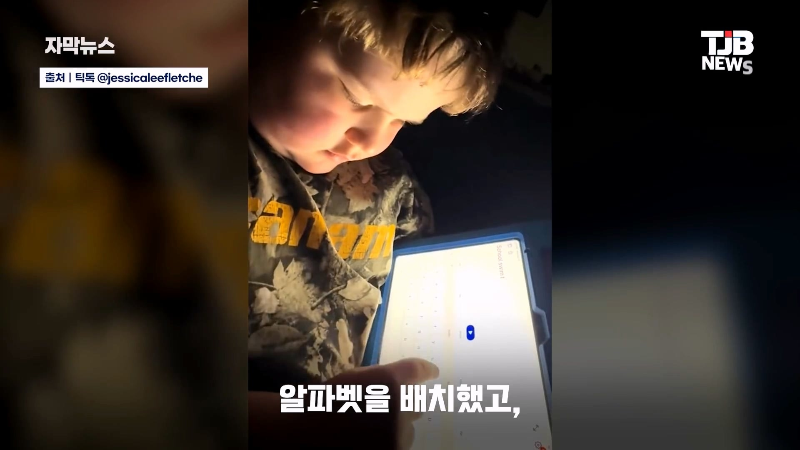
외식 중 태블릿이 꺼지자
종이에 키보드처럼 알파벳을 배치했고
두 손가락으로 자판을 누르듯
먹고 싶은 음식을 표현했음
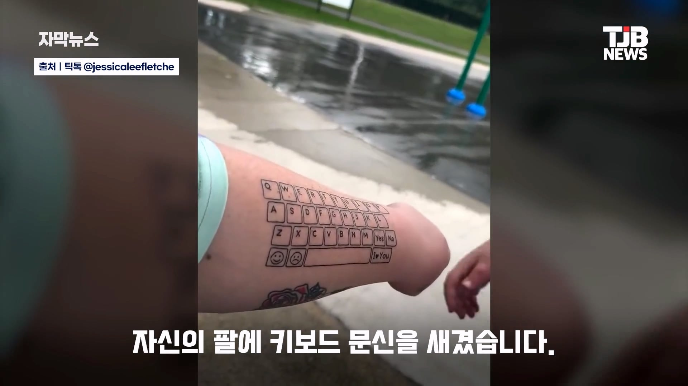
이를 본 엄마는 언제어디서든
아들과 소통하기 위해
자신의 팔에 키보드 문신을 새김
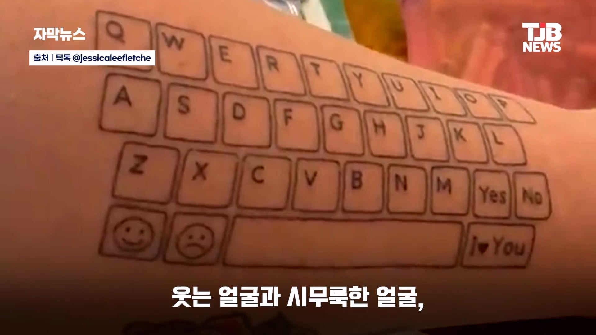
문신에는 예, 아니요, 단어
웃는 얼굴, 시무룩한 얼굴, 사랑해 표현하는
버튼까지 담겨있었음
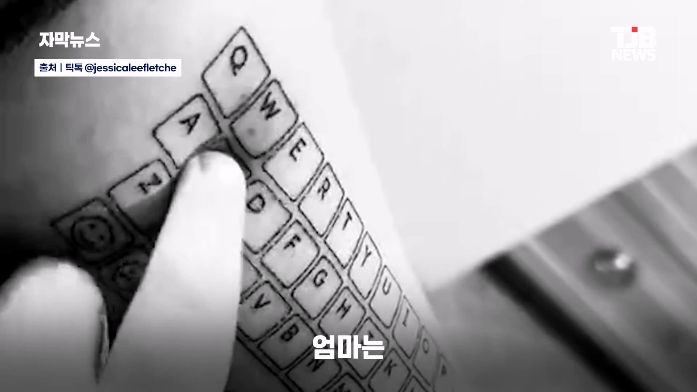
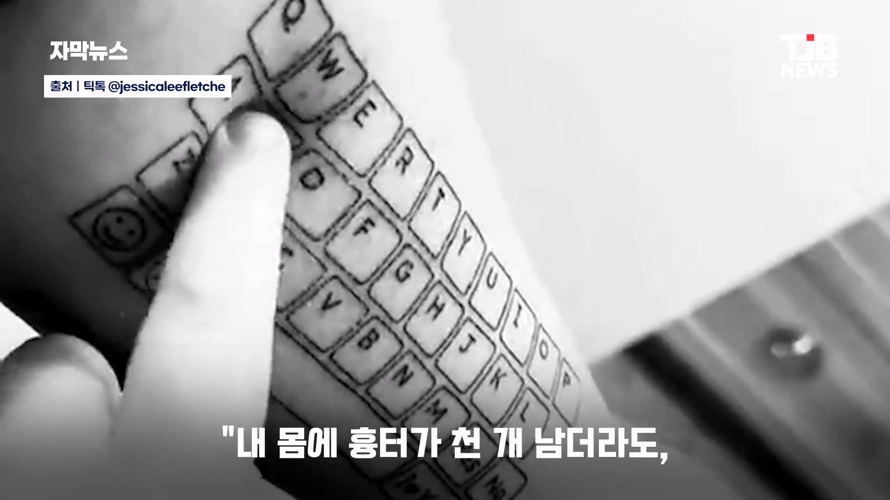
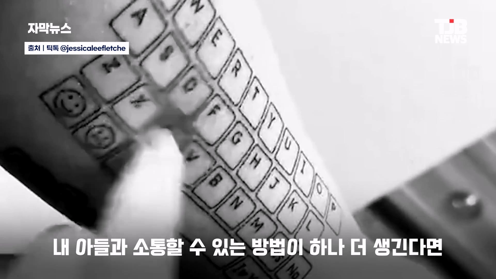
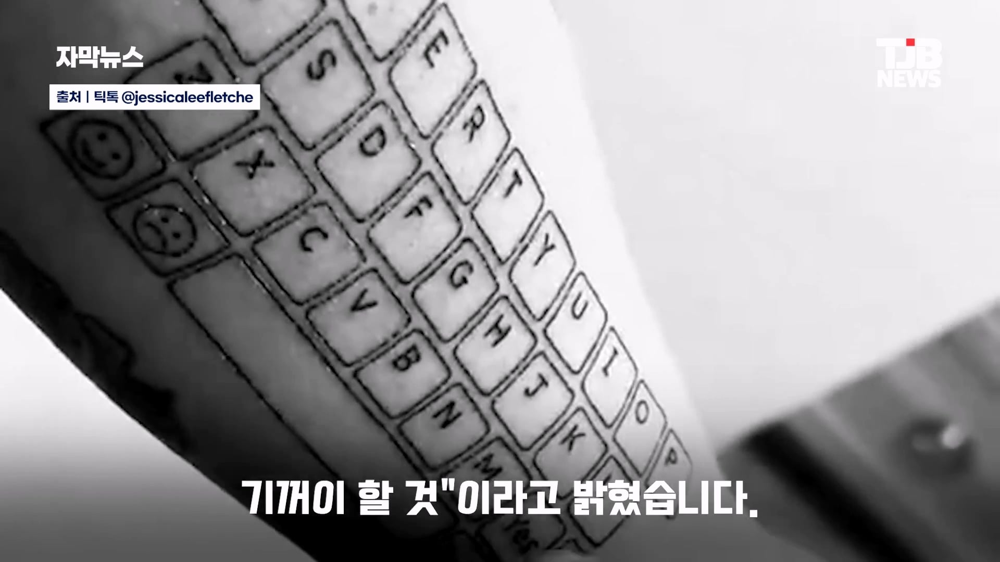
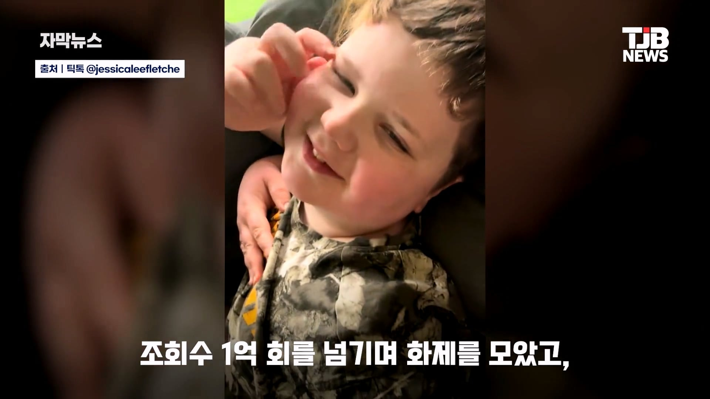
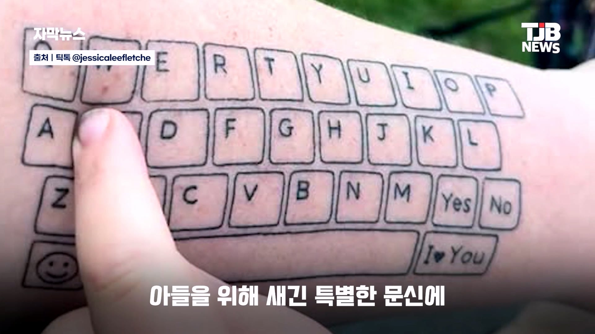
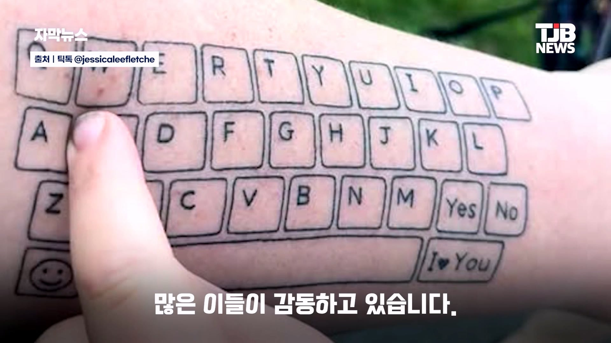


그러면 매번 펴서 누르는걸 집중해서 엄마가 봐야함.
누르면 촉각으로 바로 말하듯이 소통이 될듯